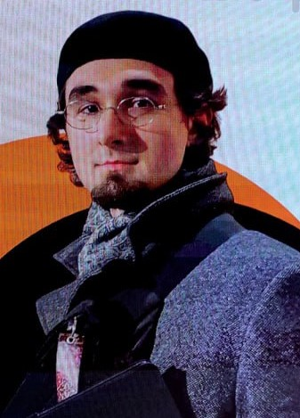
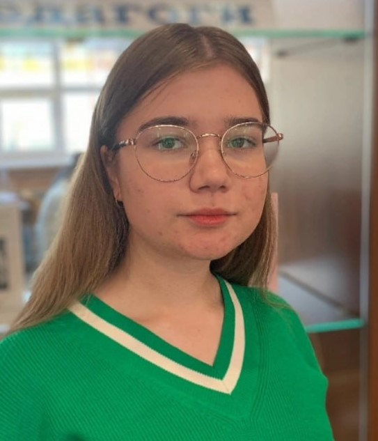

Добро пожаловать на сайт LingvoScience
Студенческая жизнь - это не только лекции, практические занятия, экзамены и зачеты. В университете, каждый может выбрать для себя что-нибудь интересное и захватывающее, развить уже имеющиеся навыки и таланты. Особое значение в период учебы в университете для нас практически с первого курса заняла научная деятельность.Наш проект посвящен студенческой науке.
Миссия нашего проекта - развитие студенческой науки, повышение уровня и интенсивности межвузовской студенческой коммуникации, повышение уровня студенческих публикаций.
Команда проекта
|
 |
Бурков Федор Алексеевич - студент факультета
Факультета иностранных языков, Марийский государственный университет, автор 7 научных публикаций Профиль в РИНЦ |
|  | Удовенко Арина Сергеевна - студентка
факультета Факультета иностранных языков, Марийский государственный университет, автор 4 научных публикаций Профиль в РИНЦ |